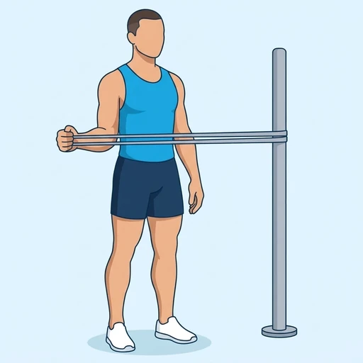
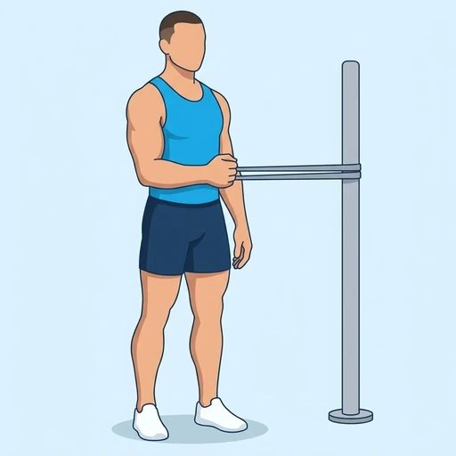
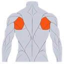

Band Shoulder External Rotation
A rotator cuff exercise with a resistance band. With your elbow tucked against your side and bent to a right angle, you rotate your forearm outward against the pull of the band and then return slowly. It strengthens the small muscles at the back of the shoulder that turn the arm outward and keep the joint steady.
Shoulders · Resistance Band · Beginner


Muscles worked by the Band Shoulder External Rotation
Primary

Infraspinatus & Teres MinorInfraspinatus and Teres MinorSecondary
Also called: infraspinatus, teres minor, external rotators, posterior rotator cuff.
Equipment
Also called: power band, pull-up band, assistance band, tube band, tubing band, long resistance band.
How to do the Band Shoulder External Rotation
- Anchor a resistance band at about elbow height and stand sideways to it, so that the arm you are training is on the side away from the anchor.
- Hold the band in that hand, bend your elbow to 90 degrees and tuck it against your side; a small folded towel between elbow and ribs helps keep it there.
- Start with your forearm pointing across your stomach and the band under light tension.
- Rotate your forearm outward, away from your body and the anchor, keeping your elbow fixed at your side and your wrist straight.
- Pause when your forearm points slightly outward, without leaning or twisting your trunk.
- Return slowly to the start against the band, repeat for the planned repetitions, and then switch arms.
Form tips
- Use a light band and slow repetitions; these small muscles tire quickly.
- Keep your elbow pinned to your side; if it drifts away, the larger shoulder muscles take over from the rotator cuff.
- Stop if you feel a pinch at the front of the shoulder and keep the movement pain-free.
At a glance
| Body part | Shoulders |
|---|---|
| Category | Strength |
| Force type | Pull |
| Mechanic | Isolation |
| Difficulty | Beginner |
| Equipment | Resistance Band |
| Goals | Rehabilitation, Strength |
| Tags | Knee safe, No axial load, Lower back safe, Shoulder safe |
| MET | 5.0 (metabolic equivalent, for calorie estimates) |
| Unilateral | Yes |
| Bodyweight | No |
| Dataset id | band-shoulder-external-rotation |
Band Shoulder External Rotation in German & Spanish
| German | Schulter-Außenrotation mit Band |
|---|---|
| Spanish | Rotación Externa de Hombro con Banda |
Descriptions, instructions and tips ship in all three languages in the JSON.
Related exercises
Exercise data (JSON)
The record below is exactly what exercises.json ships for this exercise — names, descriptions, instructions and tips in English, German and Spanish.
{
"id": "band-shoulder-external-rotation",
"name_en": "Band Shoulder External Rotation",
"name_de": "Schulter-Außenrotation mit Band",
"name_es": "Rotación Externa de Hombro con Banda",
"description_en": "A rotator cuff exercise with a resistance band. With your elbow tucked against your side and bent to a right angle, you rotate your forearm outward against the pull of the band and then return slowly. It strengthens the small muscles at the back of the shoulder that turn the arm outward and keep the joint steady.",
"description_de": "Eine Übung für die Rotatorenmanschette mit einem Widerstandsband. Mit dem Ellbogen eng am Körper und im rechten Winkel gebeugt drehst du den Unterarm gegen den Zug des Bandes nach außen und führst ihn dann langsam zurück. Sie kräftigt die kleinen Muskeln an der Schulterrückseite, die den Arm nach außen drehen und das Gelenk stabil halten.",
"description_es": "Un ejercicio para el manguito rotador con banda elástica. Con el codo pegado al costado y flexionado en ángulo recto, rotas el antebrazo hacia afuera contra la tensión de la banda y luego vuelves despacio. Fortalece los pequeños músculos de la parte posterior del hombro que giran el brazo hacia afuera y mantienen estable la articulación.",
"category": "strength",
"force_type": "pull",
"mechanic": "isolation",
"difficulty": "beginner",
"equipment": "resistance_band",
"body_part": "shoulders",
"primary_muscles": [
"infraspinatus_teres_minor"
],
"secondary_muscles": [
"posterior_deltoid"
],
"goals": [
"rehabilitation",
"strength"
],
"tags": [
"knee_safe",
"no_axial_load",
"lower_back_safe",
"shoulder_safe"
],
"variation_group": "shoulder-rotation",
"is_unilateral": true,
"is_bodyweight": false,
"instructions_en": [
"Anchor a resistance band at about elbow height and stand sideways to it, so that the arm you are training is on the side away from the anchor.",
"Hold the band in that hand, bend your elbow to 90 degrees and tuck it against your side; a small folded towel between elbow and ribs helps keep it there.",
"Start with your forearm pointing across your stomach and the band under light tension.",
"Rotate your forearm outward, away from your body and the anchor, keeping your elbow fixed at your side and your wrist straight.",
"Pause when your forearm points slightly outward, without leaning or twisting your trunk.",
"Return slowly to the start against the band, repeat for the planned repetitions, and then switch arms."
],
"instructions_de": [
"Befestige ein Widerstandsband etwa auf Ellbogenhöhe und stell dich seitlich dazu, sodass der trainierte Arm auf der vom Befestigungspunkt abgewandten Seite ist.",
"Halte das Band in dieser Hand, beuge den Ellbogen auf 90 Grad und lege ihn eng an die Seite; ein kleines gefaltetes Handtuch zwischen Ellbogen und Rippen hilft, ihn dort zu halten.",
"Beginne mit dem Unterarm quer vor dem Bauch und dem Band unter leichter Spannung.",
"Drehe den Unterarm nach außen, weg von deinem Körper und vom Befestigungspunkt, und halte dabei den Ellbogen fest an der Seite und das Handgelenk gerade.",
"Halte kurz inne, wenn der Unterarm leicht nach außen zeigt, ohne dich zu lehnen oder den Rumpf zu verdrehen.",
"Führe den Arm langsam gegen das Band zurück in die Ausgangsposition, wiederhole für die geplante Anzahl an Wiederholungen und wechsle dann den Arm."
],
"instructions_es": [
"Ancla una banda elástica a la altura del codo y colócate de lado a ella, de modo que el brazo que vas a trabajar quede en el lado más alejado del anclaje.",
"Sujeta la banda con esa mano, flexiona el codo a 90 grados y pégalo al costado; una toalla pequeña doblada entre el codo y las costillas ayuda a mantenerlo ahí.",
"Empieza con el antebrazo apuntando a través del abdomen y la banda con una tensión ligera.",
"Rota el antebrazo hacia afuera, alejándolo del cuerpo y del anclaje, con el codo fijo al costado y la muñeca recta.",
"Haz una pausa cuando el antebrazo apunte ligeramente hacia afuera, sin inclinarte ni girar el tronco.",
"Vuelve despacio a la posición inicial contra la banda, repite el número de repeticiones previsto y luego cambia de brazo."
],
"tips_en": [
"Use a light band and slow repetitions; these small muscles tire quickly.",
"Keep your elbow pinned to your side; if it drifts away, the larger shoulder muscles take over from the rotator cuff.",
"Stop if you feel a pinch at the front of the shoulder and keep the movement pain-free."
],
"tips_de": [
"Nimm ein leichtes Band und bewege dich langsam; diese kleinen Muskeln ermüden schnell.",
"Halte den Ellbogen fest an der Seite; wenn er wegwandert, übernehmen die größeren Schultermuskeln die Arbeit von der Rotatorenmanschette.",
"Hör auf, wenn du einen Stich an der Schultervorderseite spürst, und halte die Bewegung schmerzfrei."
],
"tips_es": [
"Usa una banda ligera y repeticiones lentas; estos músculos pequeños se cansan rápido.",
"Mantén el codo pegado al costado; si se separa, los músculos grandes del hombro sustituyen al manguito rotador.",
"Para si notas un pellizco en la parte delantera del hombro y mantén el movimiento sin dolor."
],
"met": 5.0,
"images": {
"flat": {
"start": "images/flat/band-shoulder-external-rotation-start.webp",
"peak": "images/flat/band-shoulder-external-rotation-peak.webp"
}
}
}Fetch just this exercise
const { exercises } = await fetch(
"https://exercise-dataset.com/exercises.json"
).then(r => r.json());
const ex = exercises.find(e => e.id === "band-shoulder-external-rotation");Free for personal and commercial in-app use with attribution (“Exercise data by RepDB”) — see the license and ready-made attribution snippets. Redistributing the data as a dataset or API is not permitted.